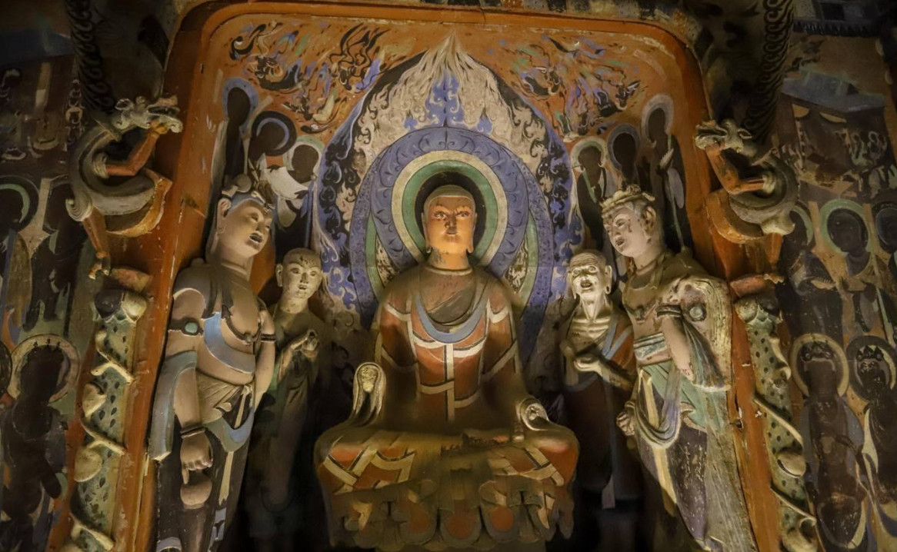

D
U
N
H
U
A
N
G



Dunhuang is a historic city located in northwestern Gansu Province, China. Situated at the western end of the Hexi Corridor, it served as a crucial crossroads on the ancient Silk Road for over a millennium. Known for its spectacular desert landscapes, ancient Buddhist art at the Mogao Caves, and rich cultural heritage, Dunhuang has been a melting pot of Chinese, Indian, Central Asian, and Middle Eastern civilizations.
Today, Dunhuang attracts visitors from around the world who come to explore its ancient caves, ride camels across the Singing Sand Dunes, marvel at the Crescent Lake oasis, and experience the unique blend of cultures that has shaped this extraordinary city.
Mogao Caves

Mingsha Mountain

Crescent Lake
Silk Road Heritage
Dunhuang was the most important oasis town on the Silk Road, connecting China with Central Asia, India, and the Mediterranean world. The city's strategic location made it a vital hub for trade, cultural exchange, and the spread of Buddhism across Asia.
Learn More